Lista przekłuć
Uszy
Przekłucia w uszach od tysięcy lat są jednymi z najbardziej popularnych. Niestety, z tego powodu też wiele osób wykonuje je amatorsko (kto nie słyszał o metodzie na ziemniaka?) i powiela ogromną ilość mitów. Oczywiście nie przedstawię w tej sekcji (ani żadnej) wszystkich przekłuć, lecz te najpopularniejsze.
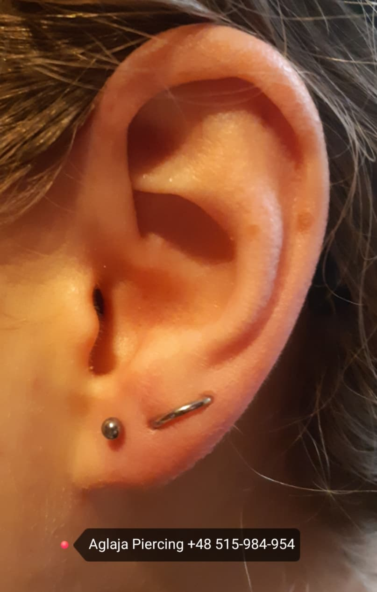
Przekłucia standard lobe (na środku płatka), oraz przekłucia upper-lobe. Czas gojenia: 1,5-2 miesiące.
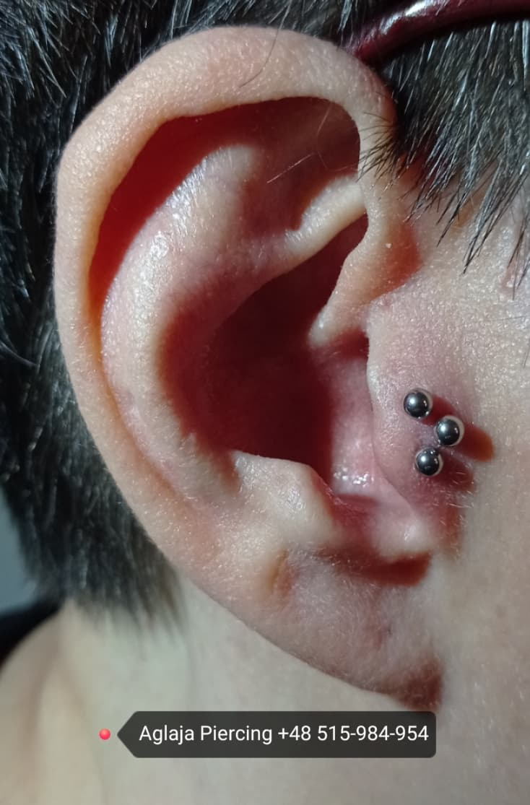
Tragus, czyli kolczyk (w tym przypadku potrójny) w chrząstce przy kanale słuchowym. Uważaj, może pojawić się ziarnina. Czas gojenia: 3-4 miesiące.
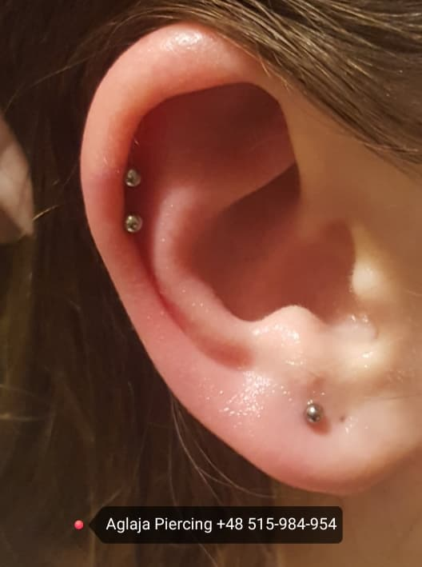
Helix - jedno z najbardziej popularnych przekłuć. Uważaj - możliwa ziarnina. Czas gojenia: 3-4 miesiące.
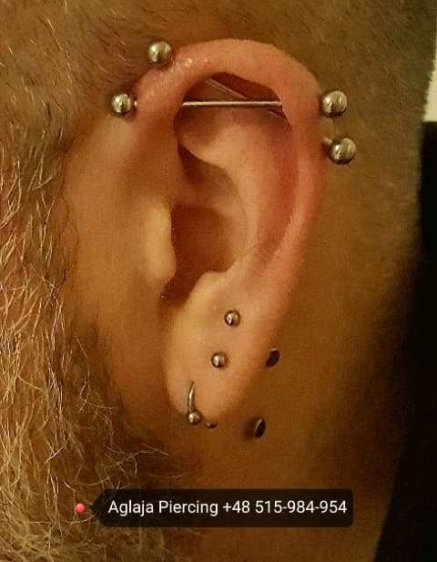
Industrial, popularne przekłucie lecz nie zawsze możliwe do wykonania z powodów anatomicznych. Przed przyjściem do piercera wyślij zdjęcie ucha, by piercer mógł zobaczyć czy będzie ono możliwe. Uważaj, możliwa ziarnina! Czas gojenia: 6-9 miesięcy
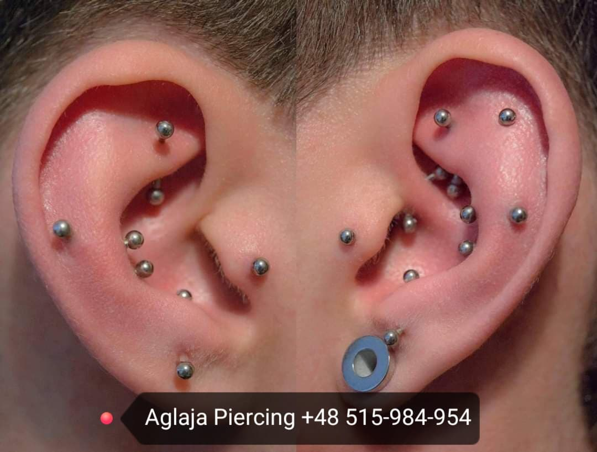
Kompozycja wielu kolczyków, głównie w chrząstkach. Są tu conche, tragus, lobes, rooki i snugi, z czego ten ostatni ma czas gojenia 4-5 miesięcy a inne w chrząstkach 3-4 miesiące. Są one też dosyć podatne na ziarniny.
Nos
Kolczyki w nosie w ostatnich latach stają się coraz bardziej popularne, głównie przez efektowny wygląd, mała bolesność i szybkość w gojeniu. Na przekłucie nosa odpuść sobie makijaż oczu - przez podrażnienie nerwów będziesz łzawić ;).
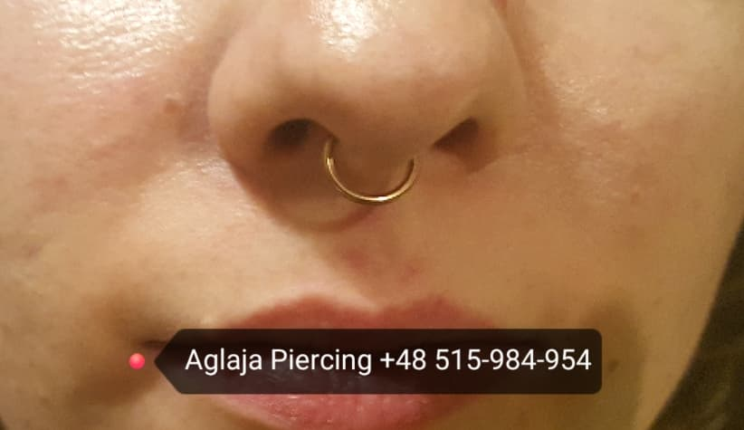
Przykład zagojonego przekłucia typu septum. Mało bolesny, z czasem gojenia 1-2 miesiące.
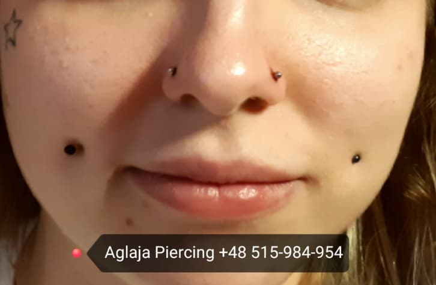
Nostril (te w płatkach nosa) - także mało bolesne, z czasem gojenia 2-3 miesiące.
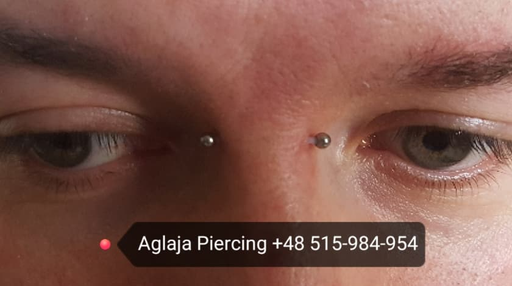
Bridge, chociaż wygląda strasznie przez wielu uznawany jest za najmniej bolesne przekłucie. Mało problematyczny, a czas gojenia wynosi około 3 miesiące.
Jama ustna i okolice
Przekłucia w jamie ustnej także są znane z małej bolesności, jednakże pielęgnacja jest inna i dowiesz się o niej tutaj. Dotyczy się to jednak tylko tych kolczyków, które przynajmniej częściowo znajdują się w błonie śluzowej.
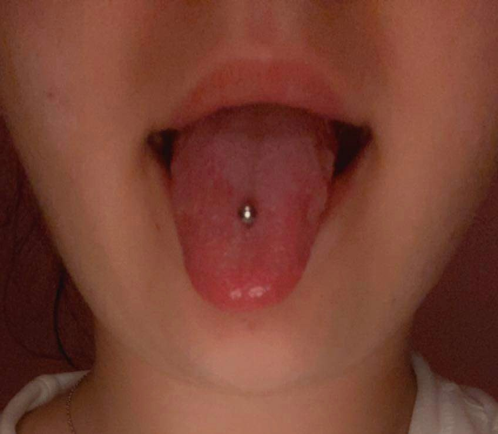
Najbardziej popularne przekłucie języka. Mało bolesne. Po około dwóch tygodnia przyjdź ponownie do swojego piercera na założenie krótszego kolczyka. Czas gojenia: 1-2 miesiące.
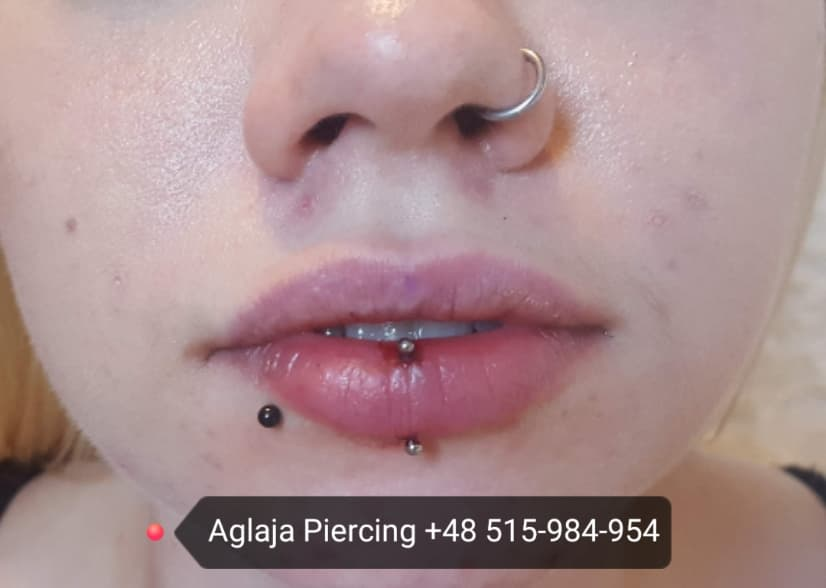
Vertical labret to przekłucie przechodzące przez środek dolnej wargi. Czas gojenia: 2-3 miesiące.
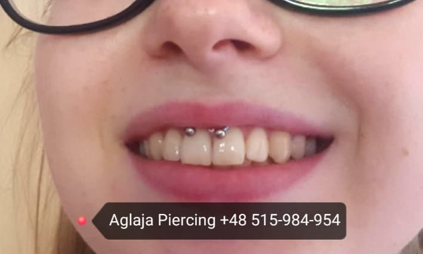
Smiley przechodzi przez wędzidełko, tutaj widać zagojony kolczyk. Czas gojenia: 1 miesiąc. Skonsultuj się z piercerem, wędzidełko może być za krótkie.
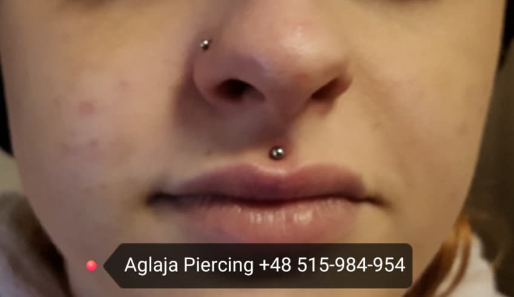
Medusa to przekłucie przechodzące przez rynienkę podnosową. Pielęgnacja taka, jak przy kolczykach w skórze ORAZ w jamie ustnej. Czas gojenia: około 3 miesięcy.
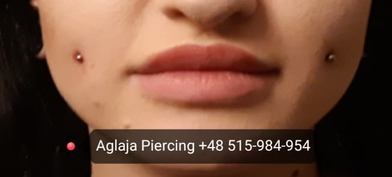
Cheeks to kolczyki w policzkach. Można zrobić tradycyjnie (czas gojenia: 4 miesiące), lub na microdermalach (czas gojenia: 2 miesiące).
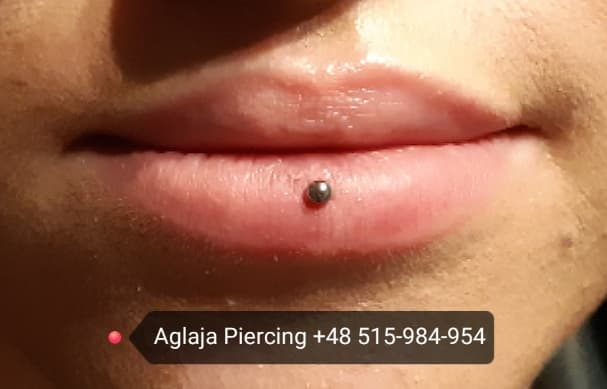
Ashley, podobnie jak medusa, przechodzi przez wargę do środka jamy ustnej. Czas gojenia: 2-4 miesiące.
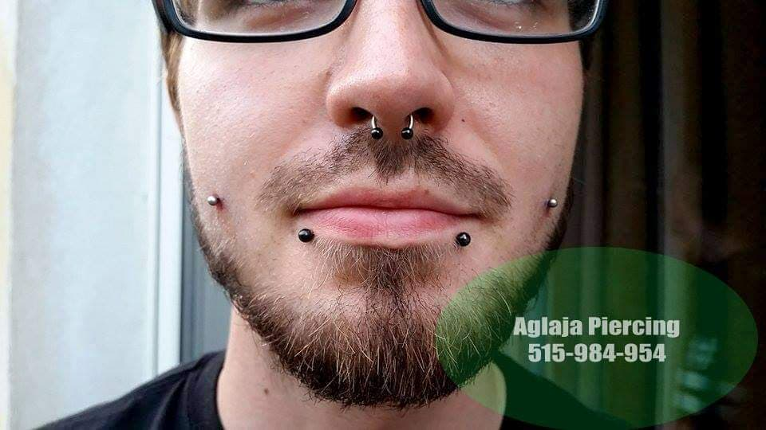
Snake bites to kolczyki przechodzące przez dolną wargę, najczęściej wykonywane symetrycznie. Czas gojenia: 3-5 miesięcy.
Microdermale i surface-bary
Tzw. kolczyki powierzchniowe. Pozwalają na wykonanie pięknej ozdoby tak naprawdę wszędzie (oczywiście niektóre miejsca są wyjątkowo narażone na podrażnienia i migracje). Nie wykonuje się ich igłą, lecz specjalnym skalpelem (przy microdermalach).
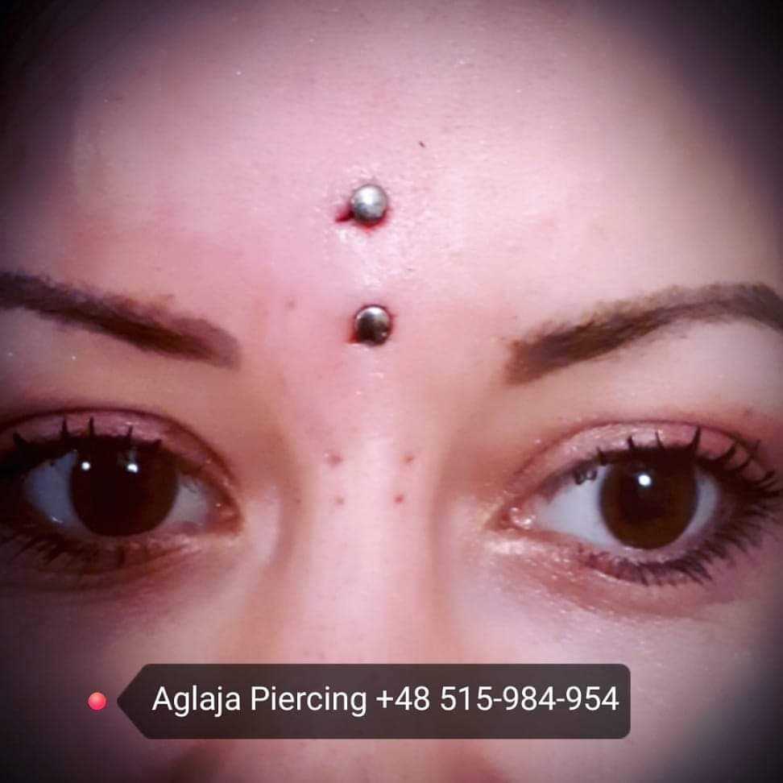
Typowe przekłucie na surface-barze. Uważaj na kosmetyki, które mogłyby podrażnić Świeży kolczyk. Czas gojenia: 3-4 miesiące. Można zrobić na microdermalu.
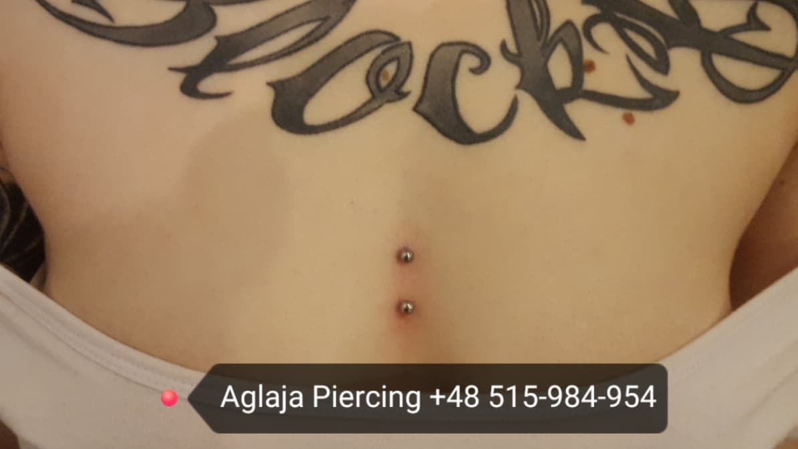
Sternum to kolejne przekłucie na surface-barze, choć można na microdermalach. Czas gojenia: 3-4 miesiące.
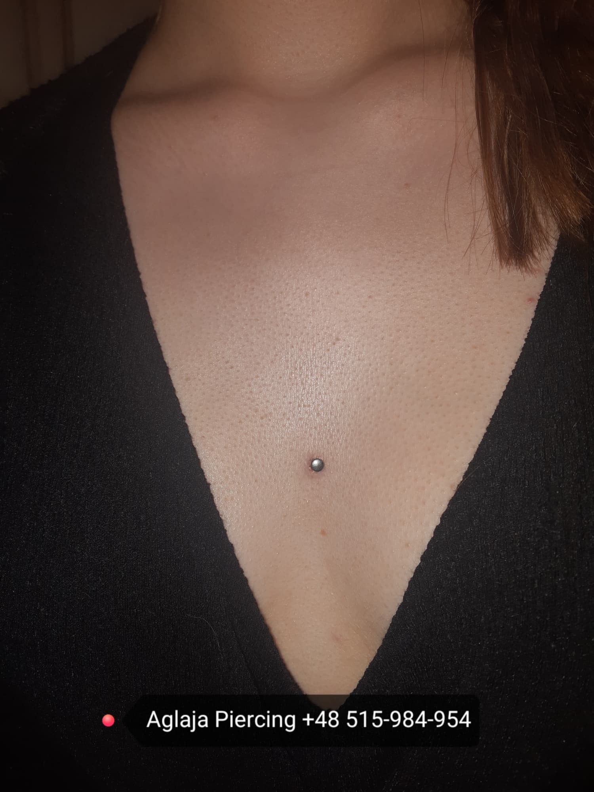
Sternum na microdermalu. Czas gojenia: 2 miesiące (taki sam jak dla innych microdermali).
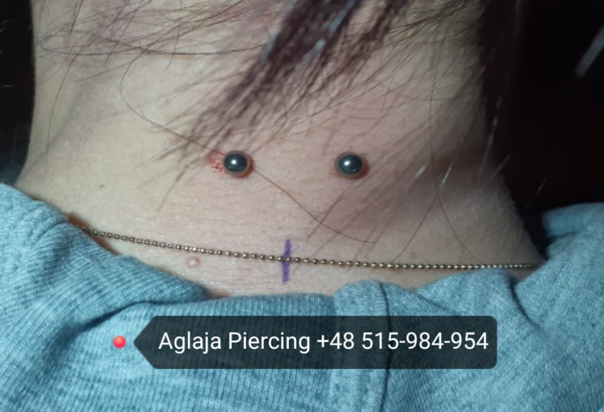
Przekłucie na surface-barze na karku. Można wykonać na microdermalu. Czas gojenia: 3-4 miesiące.
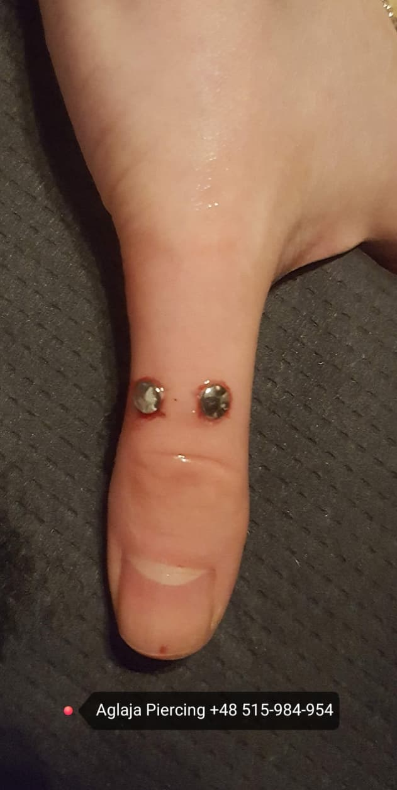
Microdermale pozwalają na kolczyki nawet w najbardziej osobliwych miejscach, tutaj na przykład na kciuku :)